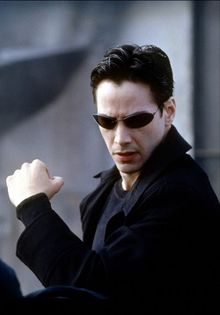
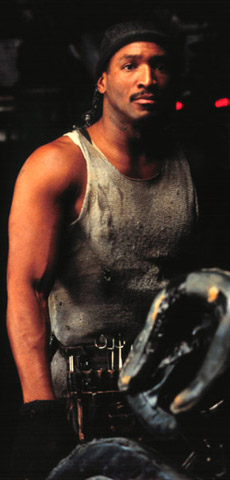
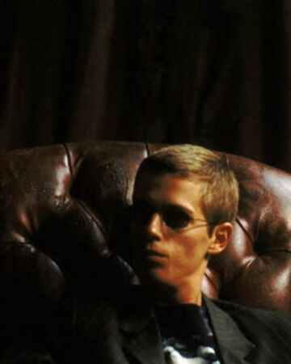

The Matrix

What is Matrix?
“The Matrix has you,†Neo’s computer tells him. What is the Matrix exactly? In the movie, it’s a virtual reality (VR) world into which people are plugged while their bodies are used for energy by a race of artificially intelligent beings.
The word matrix originated in the 15th century, according to the Oxford English Dictionary (OED), and referred to the womb (echoing the womb-like pods Neo and the others are kept in). The science fiction meaning, basically the equivalent of cyberspace, might have been coined in a 1976 episode of Doctor Who, “Deadly Assassinâ€: “How can you intercept thought patterns within the matrix itself?â€
The matrix as a VR-world might have first appeared in the 1984 novel by William Gibson, The Neuromancer: "He'd operated on an almost permanent adrenaline high ... jacked into a custom cyberspace deck that projected his disembodied consciousness into the consensual hallucination that was the matrix."
What happened?
In the near future, Computer hacker Neo is contacted by underground freedom fighters who explain that reality as he understands it is actually a complex computer simulation called the Matrix. Created by a malevolent Artificial Intelligence, the Matrix hides the truth from humanity, allowing them to live a convincing, simulated life in 1999 while machines grow and harvest people to use as an ongoing energy source.
The leader of the freedom fighters, Morpheus, believes Neo is "The One" who will lead humanity to freedom and overthrow the machines. Together with Trinity, Neo and Morpheus fight against the machine's enslavement of humanity as Neo begins to believe and accept his role as "The One".
Who is the main character?
Neo has a couple of meanings. It's an anagram for "one," as in the One who will save humanity, and also means “new†as in the new, freshly-born person now aware of the Matrix.
The name Thomas Anderson also has significance. Thomas comes from an Aramaic word that means “twin.†Agent Smith tells Neo, “It seems that you have been living two lives,†one as program writer Thomas Anderson and the other as hacker Neo. Thomas might also refer to doubting Thomas, the apostle who refused to believe in Jesus’s resurrection until he fingered the wounds himself. As for Anderson, it means “son of man,†perhaps to emphasize Neo's humanity.
The Matrix: Characters
- Neo: Neo is Thomas Anderson's "hacker name". He is freed from the Matrix by Morpheus and his crew to be the savior of mankind (the One).
- Trinity: Trinity is Morpheus' right-hand. Morpheus freed her years ago and she has since become his most trusted ally. The Oracle told her she would fall in love with the One.
- The Oracle: An unusual inhabitant of the Matrix, The Oracle is able to see the future. Morpheus takes members of his crew to her, most importantly Neo. The Oracle is also responsible for the original prophecy concerning the existence of the One.
- Switch: A member of Morpheus' crew, Switch is curiously the only one who appears in white clothes when they enter the Matrix.
- Tank: A member of Morpheus' crew, Tank was born in Zion - he never was a slave to the Matrix. His brother Dozer is also on the Nebuchadnezzar. Tank thwarts Cypher's plan, but not before Cypher wipes out most of the crew.
- Dozer: A member of Morpheus' crew, and Tank's brother, Dozer was born in Zion - he never was a slave to the Matrix.
- Morpheus: Captain of the hovercraft Nebuchadnezzar, Morpheus believes in The Oracle's prophecy, and he believes he has finally found the One. He acts as Neo's mentor.
- Agent Smith: The main adversary to Morpheus' plan. A sentient program in the Matrix, Smith is able to do almost everything Neo can. Agents are supremely powerful, and no one has every survived a standoff with an Agent before Neo.
- Cypher: A member of Morpheus' crew, Cypher decides the life of a resistance fighter isn't all it's cracked up to be and engineers a deal to be reinserted back into the Matrix, at the expense of Zion.
- Apoc: A member of Morpheus' crew, he is the first to die when Cypher sets his plan in motion.
- Mouse: A member of Morpheus' crew, Mouse is the 'digital pimp' responsible for programming the woman in red - he offers private visits with her as well.
- Jones & Brown: Two other sentient programs, they have all the dangerous capabilities of Agent Smith, but are not as individualistic or driven as he is.
Symbolism of Names
- Matrix in the dictionary refers to "a situation or surrounding substance within which something else originates, develops, or is contained. The womb." Additionally, the concept of the Matrix as an illusion or a 'construct' that humans are unaware of resembles the idea of Samsara in Buddhism and Hinduism. Samsara teaches that the world we consider 'real' is actually a projection of our own desires. From Morpheus Neo learns that how he'd perceived himself in the Matrix was simply a "the mental projection of your digital self." The "real" sensory world "is simply electrical signals interpreted by your brain."
- Neo in latin means new. It's also an anagram of "one". Thomas Anderson, Neo's given name relates to 'doubting Thomas' in the bible when he doesn't believe he is the One. Anderson means 'son of man' which is a messianic title.
- The Oracle in greek history was an intermediary between god and man. People could ask an Oracle questions and get an answer, sometimes in a riddle format that often wouldn't make sense until later. In the Matrix she says, "You know what that means? It's Latin. Means know thyself." "Know thyself" is inscribed upon the Oracle of Apollo and attributed to the Delphic Oracle, Greece, 6th century B.C.
- Trinity represents the number three which is a powerful number in many stories and traditions. In keeping with the Christian themes, the 'father', 'son', 'holy spirit' seems to be related here. In The Matrix, Morpheus, Trinity, and Neo fight the machines.
- Morpheus means the fashioner or molder, because of the shapes he calls up before the sleeper, in classical mythology. He is the god of dreams, which ties in with the sleep/dream theme that runs throughout the Matrix.
- Cypher is the classic betrayer, the Judas Iscariot. The word refers to a mathematical symbol denoting an absence of quantity, a zero. Also, someone with no value, a nonentity. It's also potentially related to Satan (the name could be a shortened version of 'Lucifer'). Cypher also has a goatee and wears red early in The Matrix which relate to popular images of Satan.
| The Matrix: Characters |
Actors Names |
Acting Ratings |
|  |
Keanu Reeves as Neo |
💊💊💊💊💊 |
 |
Carrie-Anne Moss as Trinity |
💊💊💊💊💊 |
 |
Gloria Foster as The Oracle |
💊💊💊💊 |
|
Belina McClory as Switch |
💊💊💊💊 |
|
| The Matrix: Characters |
Actor Names |
Acting Ratings |
|
Marcus Chong as tank |
💊💊💊💊 |
|  |
Anthony Ray Parker as Dozer |
💊💊💊💊 |
|
Laurene Fishburne as Morpheus |
💊💊💊💊 |
 |
Hugo Weaving as Agent Smith |
💊💊💊💊 |
|
| The Matrix: Characters |
Actor Names |
Acting Ratings |
|
Joe Pantoliano as Cypher |
💊💊💊💊 |
|
Julian Arahanga as Apoc |
💊💊💊💊 |
|  |
Matt Doran as Mouse |
💊💊💊💊 |
 |
Robert Taylor and Paul Goddard as Agents Jones and Brown |
💊💊💊💊 |
|
The Matrix Merch
- Grab your merch from The Matrix " Click me "for more details.
TOP
go to store